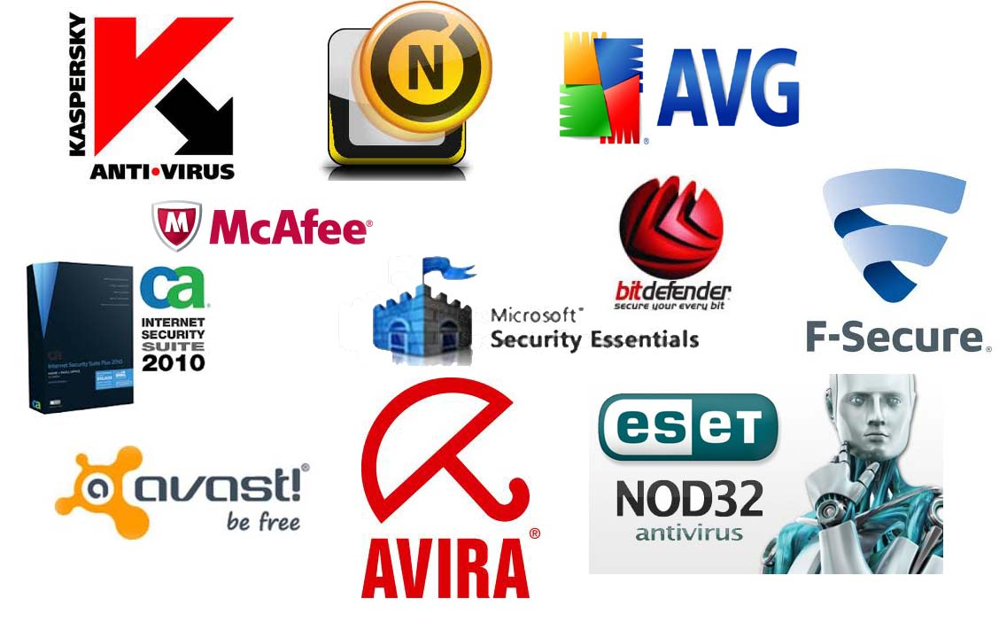
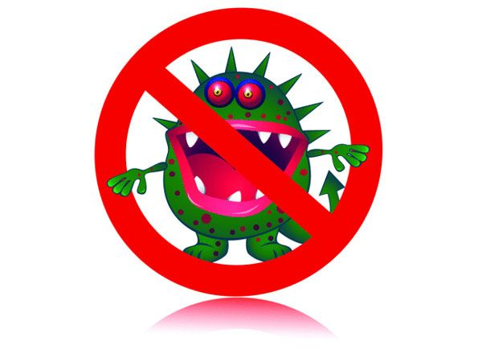

ANTIVIRUS

Τι κάνει το Anti-Virus;
Αν και οι λεπτομέρειες μπορούν να ποικίλουν μεταξύ των συσκευασιών, το λογισμικό Anti-Virus ανιχνεύει
τα αρχεία ή τη μνήμη του υπολογιστή σας για αρχεία που μπορούν να αρχίσουν μια μόλυνση.
Τα αρχεία που ψάχνει είναι βασισμένα στις υπογραφές, ή τους ορισμούς, των γνωστών ιών.
Οι κατασκευαστές ιών δημιουργούν συνεχώς νέους και ενημερωμένους ιούς, έτσι είναι σημαντικό ότι
υπάρχουν πάντα τα πιο πρόσφατα updates του Anti-Virus υπολογιστή σας.
Μόλις εγκαταστήσετε μια συσκευασία Anti-Virus, πρέπει να ανιχνεύσετε τον υπολογιστή σας για ιούς
που υπάρχουν και δεν τους γνωρίζετε.
Οι αυτόματες ανιχνεύσεις - που εξαρτώνται από ποιο Anti-Virus έχετε μπορούν και είναι σε θέση να
ανιχνεύσουν αυτόματα τα συγκεκριμένα αρχεία ή τους καταλόγους και να σας προτρέψουν σε καθορισμένα διαστήματα.
Χειροκίνητες ανιχνεύσεις - είναι επίσης μια καλή ιδέα να ανιχνευθούν τα αρχεία που λαμβάνετε
από μια εξωτερική πηγή όπως το email CDs DVDs κλπ πριν τα ανοίξετε.
Πάντα πριν ανοίξετε οποιοδήποτε από τα αρχεία που λαμβάνετε τρέξτε το Anti-Virus στο αρχείο.
Τι συμβαίνει εάν το λογισμικό βρίσκει έναν ιό;
Κάθε Anti-Virus έχει δική του μέθοδο απάντησής όταν εντοπίζει έναν ιό, και η απάντηση μπορεί να
διαφέρει σύμφωνα με το εάν το λογισμικό εντοπίζει τον ιό κατά τη διάρκεια μιας αυτόματης ή χειρωνακτικής ανίχνευσης.
Μερικές φορές το λογισμικό θα παραγάγει ένα πλαίσιο διαλόγου που θα σας προειδοποιήσει ότι έχει βρει
έναν ιό και θα ρωτήσει εάν θέλετε "να καθαρίσετε" το αρχείο (για να διαγράψει τον ιό).
Σε άλλες περιπτώσεις, το λογισμικό μπορεί να προσπαθήσει να διαγράψει τον ιό χωρίς να σας ρωτήσει πρώτα.
Όταν επιλέγετε μια συσκευασία Anti-Virus, εξοικειωθείτε με τα χαρακτηριστικά γνωρίσματά του έτσι να ξέρετε τι να αναμένετε.
Ποιο λογισμικό θα έπρεπε να χρησιμοποιήσετε;
Υπάρχουν πολλοί προμηθευτές που παράγουν το λογισμικό Anti-Virus.
Όλα Anti-Virus εκτελούν την ίδια λειτουργία, έτσι η απόφασή σας μπορεί να οδηγηθεί από τις συστάσεις,
τα ιδιαίτερα χαρακτηριστικά γνωρίσματα, τη διαθεσιμότητα, ή την τιμή.
Η εγκατάσταση οποιουδήποτε λογισμικού Anti-Virus, ανεξάρτητα από ποιο επιλέξετε, αυξάνει το επίπεδο προστασίας σας.
Να είστε προσεκτικοί στην χρήση των μηνυμάτων ηλεκτρονικού ταχυδρομείου (email).
Μερικοί πρόσφατοι ιοί φθάνουν ως ηλεκτρονικό ταχυδρομείο υποθετικά από isp σας ή το τμήμα
τεχνικής υποστήριξης, και περιέχουν μια σύνδεση που υποστηρίζει ότι είναι λογισμικό Anti-Virus.
Εντούτοις, η ίδια η σύνδεση είναι στην πραγματικότητα ένας ιός, έτσι θα μπορούσατε να μολυνθείτε με το άνοιγμα του link.
Πώς θα παίρνετε τις πληροφορίες για νέους ιούς;
Αυτή η διαδικασία μπορεί να διαφέρει ανάλογα από ποιο προϊόν έχετε.
Πολλές συσκευασίες Anti-Virus περιλαμβάνουν την επιλογή να παραλαμβάνουν αυτόματα ενημερώσεις για νέους ιούς.
Επειδή οι νέες πληροφορίες προστίθενται συχνά, είναι μια καλή ιδέα να εκμεταλλευθεί αυτή η επιλογή.
Αντισταθείτε στα email που υποστηρίζουν ότι ένας γνωστός προμηθευτής Anti-Virus έχει ανιχνεύσει πρόσφατα
το "χειρότερο ιό στην ιστορία" που θα καταστρέψει το σκληρό δίσκο του υπολογιστή σας. Αυτά τα ηλεκτρονικά ταχυδρομεία είναι συνήθως εξαπατήσεις.
Μπορείτε να επιβεβαιώσετε τις πληροφορίες ιών μέσω του προμηθευτή του Anti-Virus σας ή μέσω των πόρων που προσφέρονται από άλλους.
Εγκαθιστώντας Anti-Virus και τα updates του στο λογισμικό σας, είναι ένας από τους ευκολότερους
και αποτελεσματικότερους τρόπους να προστατευθεί ο υπολογιστής σας.
Επειδή στηρίζεται στις υπογραφές των updates (τους νέους ιούς) το λογισμικό Anti-Virus μπορεί μόνο να
ανιχνεύσει τους ιούς για τους οποίους έχει ενημερωθεί, έτσι είναι σημαντικό να τηρηθεί ενήμερο.
Θα είστε ακόμα ευαίσθητοι στους ιούς που κυκλοφορούν προτού το update του Anti-Virus, έτσι καλύτερα να παίρνετε και άλλες προφυλάξεις ασφάλειας.